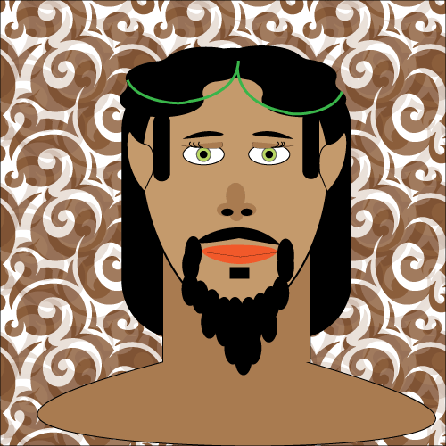

My characters name is Elrond. He is a big half-human and has two feather-like extensions on his head. They are part of his body, like fingernails grow on a hand. He dresses like a lumberjack and wears glasses. He is named after his great-great grandfather. Elrond is human, but his mother is Elvish, which makes him half elf. He gets the feathers and pointy ears from his mother. He doesn’t know his father, and mother doesn’t like to speak about him. Elrond’s Elvish side gives him lightness on his feet (despite his size) and speed and agility. As of now little is known about the Elven realm, where his mother originates from. Elrond himself resides on earth underground. He lives underground in a medium sized town with others like him. At first he thought that he was one of a kind but he was later found by another of his kind when the small village he was living near found out about him. As you can imagine word got out quick because of his appearance. The other half-human introduced him to their society underground. It is not very big, but the architecture is grand. They have artificial day with lights and because of that (and the fact that they are underground) it is relatively humid. Elves are usually known for their fine clothes which are made up of cloaks, tunics and hoods that are highly decorated, but these aren’t your average elves. Because of their living situation, they took the traditional clothing and modernized it a little bit and made them short sleeve. Elrond has this unique ability to communicate with wildlife nonverbally. He can almost feel what they are thinking and kind of gets in their head. He can then push his feelings into the animal after a connection is established to sway their decisions. He can send messages and also receive them through emotions/feelings.
